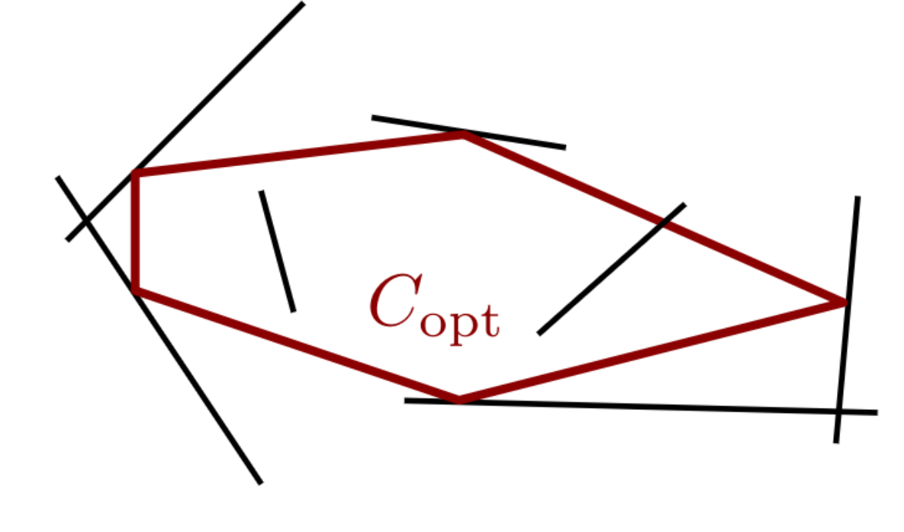

The goal of this project is to implement an algorithm to compute the smallest-perimeter intersecting
polygon for a set of segments in the plane.
This algorithm, which is an FPTAS, was presented in the paper ``Antonios Antoniadis, Mark de Berg, Sándor Kisfaludi-Bak,
and Antonis Skarlatos. Computing smallest convex intersecting polygons´´
(DOI : https://doi.org/10.20382/jocg.v16i1a6)
This paper also presents an approximation algorithm for the minimum-area intersecting polygon, but we made the choice to
focus only on the minimum-perimeter algorithm, as this algorithm is exact and looked interesting to implement.
